Users can book their time or units spent on an activity within a project directly on work packages, which gives a clear indication of how much effort the project activities require. You can either log time in the work package view or via a commit message.
| Topic | Content |
|---|---|
| Logging time | How to log time to work packages? |
| Track time with Toggl | How to stop spent time with Toggl integration? |
| Logging time via commit message | How to log time via a commit message to a work package? |
| Edit logged time | How to edit logged time on a work package? |
| Delete time entries | How to delete time entries logged to a work package? |
| Spent time widget on the My Page | How to easily track and display spent time in the spent time widget on the MyPage? |
| Define hourly rate for labor costs | How to set the hourly rate to track labor costs? |
In order to log spent hours for a certain activity, open the details of the corresponding work package. Select Log time from the More functions drop down menu, the icon with the three dots in the top right of the work packages details. Or use the Log time icon next to Spent time.
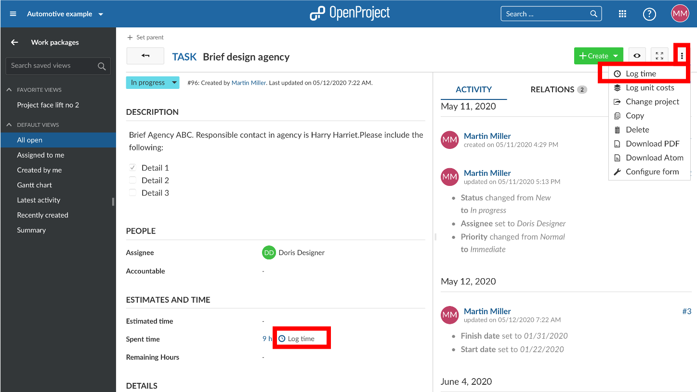
You will be directed to the detailed view to log time where you can edit the following:
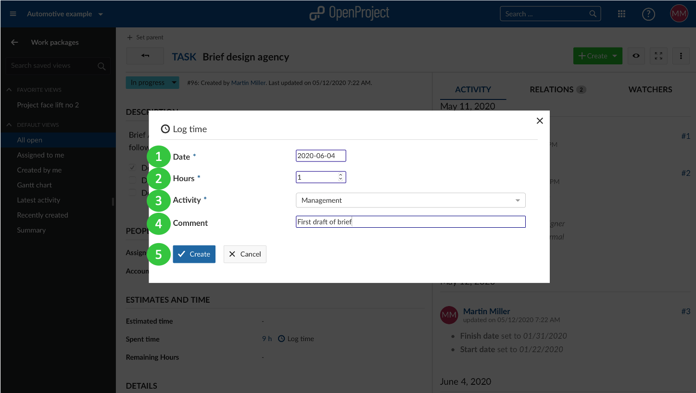
The aggregated time spent on a work package is shown in the work package details view.
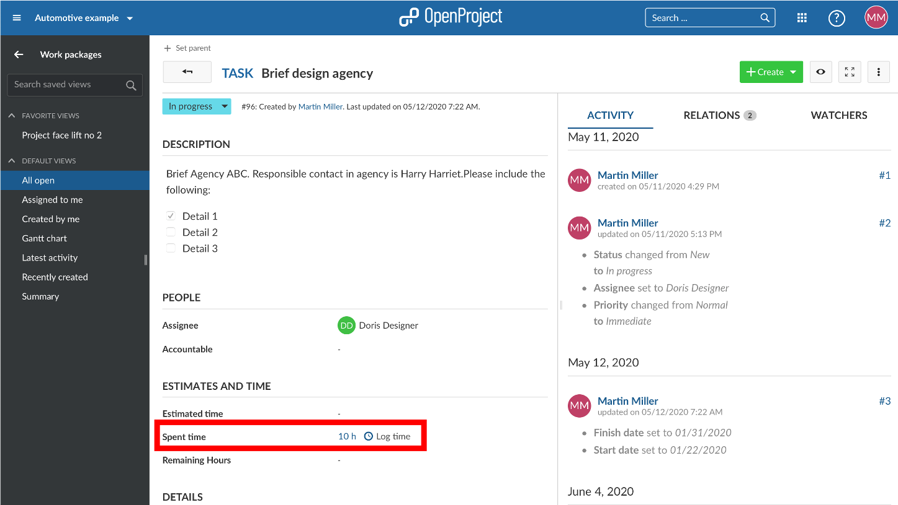
Note: the “enable time logging” option must be activated under system settings in order to log time via a commit message.
To log time to a work package via a commit message you need to use the following syntax: Refs #Work package number @amount of hours. For example refs #123 @2h will log 2 hours for the work package number 123.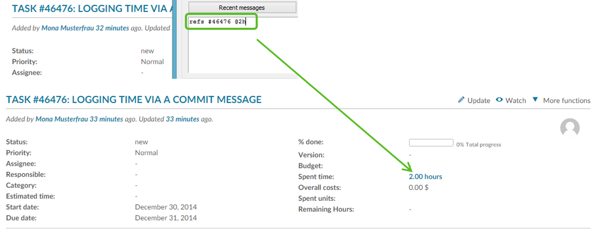
To edit logged time, click in the amount of the Spent time in the work packages details view.
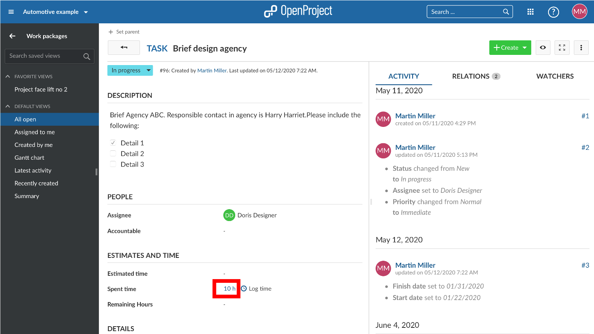
This will bring you to the time tracking report where you will see all time entries to this work package.
Click on the Edit icon next to a time entry in the list.
The same detailed view to log your time entries will appear where you are now able to apply your changes.
To delete a time entry, also click on the Spent time in the details of a work package (just as to edit a work package).
In the list of time entries, click on the Delete icon next to a time entry to drop the logged time.
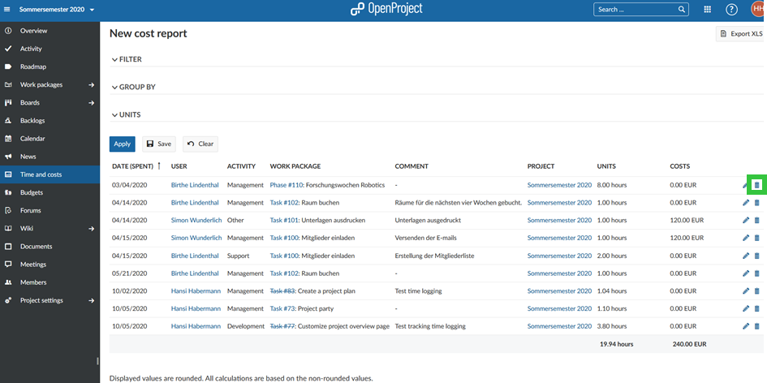
In order to track labor costs, you need to define an hourly rate in your user profile first. The labor costs will then be calculated automatically based on your hours booked and your hourly rate.
You can easily track spent time in the spent time widget on the MyPage and get an overview about all your activities during a week. It is like a weekly timesheet for yourself.
See more information about the My spent time widget on the MyPage.
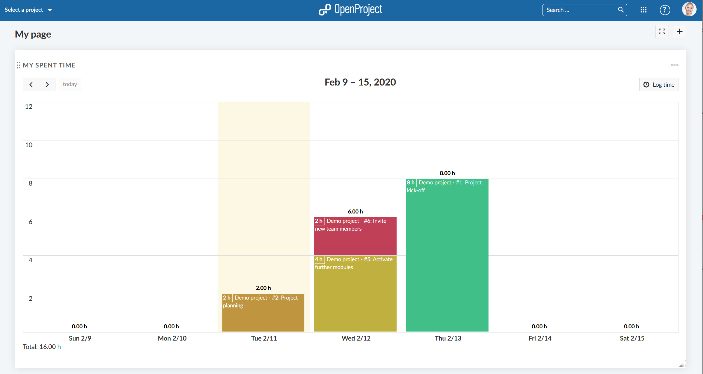
You can define an hourly rate to track labor costs per user. Please navigate to the user profile, e.g. by clicking on a hyper link of the user name on a work package.
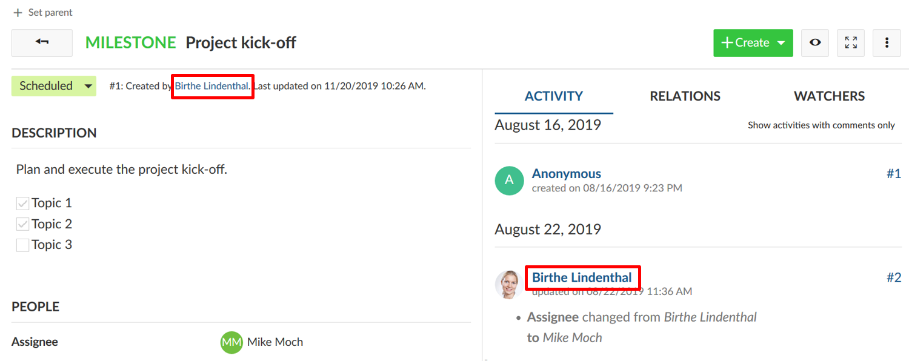
You will be directed to the user’s profile page.
Here, you can click the Edit button on the top right corner of the user profile page.
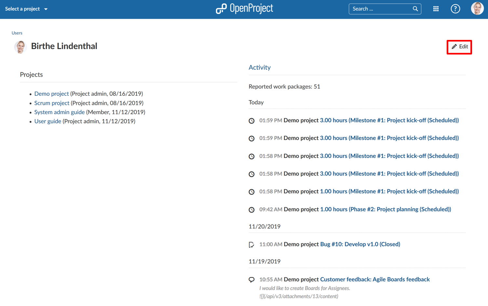
Alternatively, you can navigate to Administration ->Users & Permissions ->Users.
Click on the Rate history tab.
You will see a default hourly rate valid for all projects.
If you want to set a different hourly rate for the user on different projects, you can overwrite the default rate with a different rate below in the respective projects.
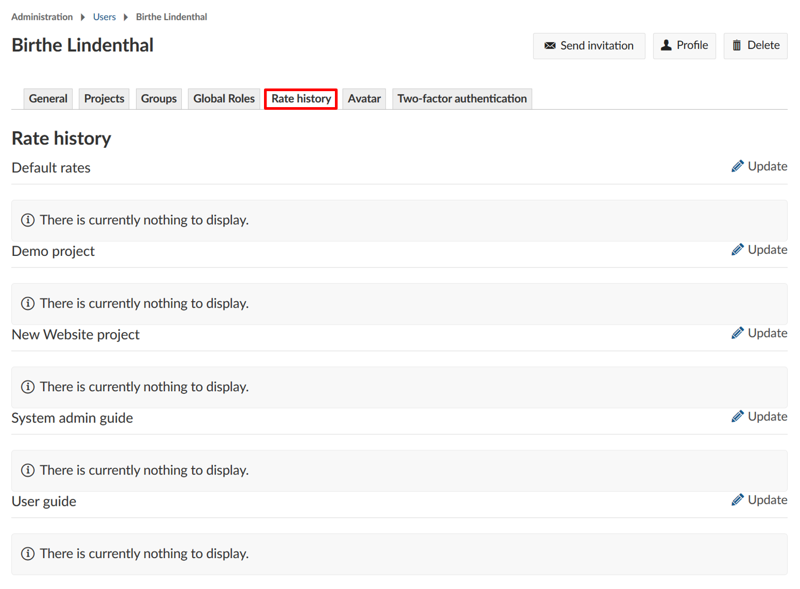
To enter a new hourly rate, click on the Update icon next to the rate history. You can either set a default hourly rate or define a rate for a certain project.
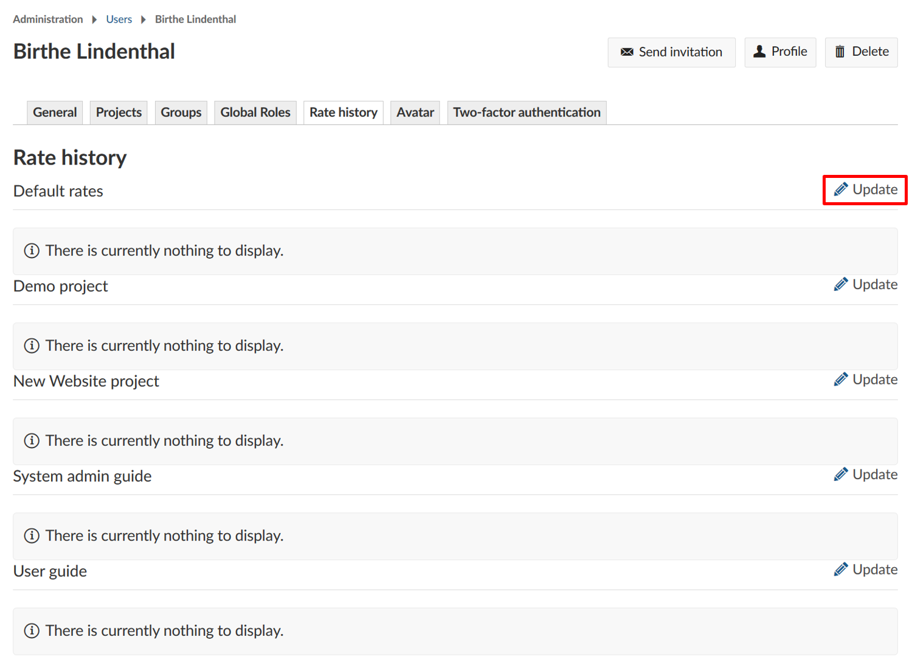
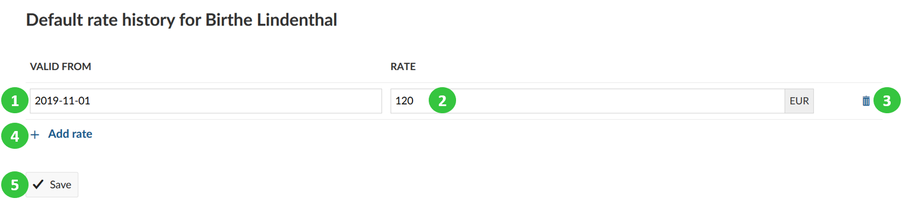